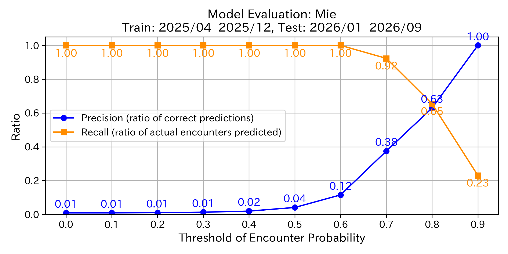
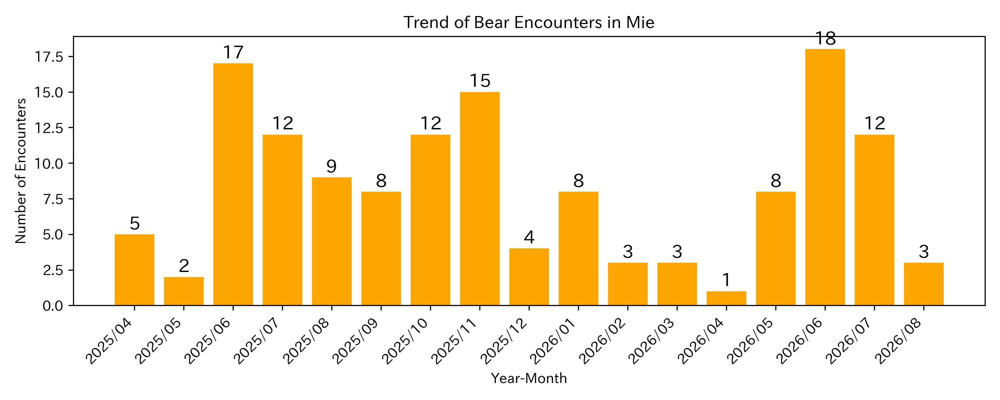

Updated: 2025.12.21 22:28:05
Sapporo | Aomori | Akita | Morioka | Yamagata | Miyagi | Fukushima | Niigata | Toyama | Ishikawa | Fukui | Nagano | Gifu | Yamanashi | Tochigi | Gunma | Saitama | Tokyo | Shizuoka | Mie | Shiga | Kyoto | Nara City, Kizugawa City, Yamazoe Village | Tottori | Yamaguchi |
This map uses an AI model developed by the Fukazawa Laboratory at Sophia University to predict bear encounter probabilities across Mie based on local data.
| Very high | |
| High | |
| Moderate | |
| Possible | |
| Low |
As of 2025/12, this period generally corresponds to the hibernation season of bears.
This map displays areas with a high number of past bear encounters, as well as prediction results based on those records, as reference information for precautionary awareness toward the next active season. The information shown here does not directly represent the current encounter risk.
Which color markers should I be most cautious about?
How accurate is this prediction map?

How much have bear encounters increased?

Technical References:
Acknowledgments:
We used the following datasets and thank the organizations for providing them:
Unauthorized copying or redistribution of this map or its contents is prohibited.
For inquiries or permission requests, please contact: fukazawa [at] sophia.ac.jp